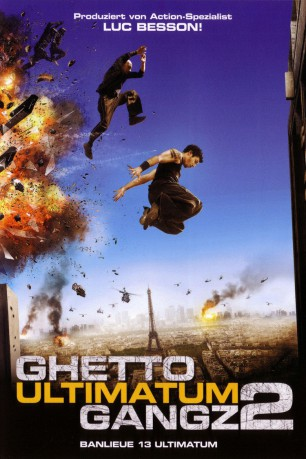
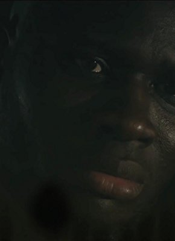

#312 Ghetto Gangz 2 - Ultimatum
Alternativ: District 13: Ultimatum (Englischer Titel)
 
 IMDB-Wertung: 6.5 / 10
IMDB-Wertung: 6.5 / 10  Metascore: 64
Metascore: 64 
Paris im Jahr 2016: Ein Isolationswall umz��unt die berüchtigten, von Gangs beherrschten Ghettos der Vorstadtbezirke. Um eine Lösung der Probleme mit den Gangs herbeizuführen, inszeniert die Sondereinsatz-Behörde DISS ein Attentat auf Pariser Streifenpolizisten. Dabei lassen sie es so aussehen, als hätten die Gangs die Beamten auf dem Gewissen, um die Regierung davon zu überzeugen, dass es nur eine Lösung geben kann: Die Vernichtung des gesamten Bezirkes. Doch DISS hat die Rechnung ohne den Polizisten Damien und seinen Freund Leito gemacht, die bereits eine Verschwörung ahnen und mit allen Mitteln versuchen, das Schlimmste zu verhindern. Es beginnt ein Wettlauf gegen die Zeit.
Jahr: 2009
Dauer: 101 Minuten
FSK: 16
Land: Frankreich Studio: UFATonspuren: DTS-HD - ,
Untertitel: Deutsch,
Auflösung: 1080p (1920×1080) Größe: 15564 MB
Genre: Action, Krimi, Thriller
Regisseur: Patrick Alessandrin
Drehbuch: Luc Besson
Soundtrack: Damien Roques, Trak Invaders
Darsteller:
 Cyril Raffaelli als Capt. Damien Tomaso
Cyril Raffaelli als Capt. Damien Tomaso David Belle als Leïto
David Belle als Leïto Philippe Torreton als Le président de la République
Philippe Torreton als Le président de la République Elodie Yung als Tao
Elodie Yung als Tao- Francis Coffinet als Le comptable
 Moussa Maaskri als L'homme de main de Roland
Moussa Maaskri als L'homme de main de Roland- Vesna Zakic als Mère de familie exode
 Alex Martin als Little Montana's crew
Alex Martin als Little Montana's crew- Emilien De Falco als Policier , uncredited
 Alaa Safi als Ali K's crew , uncredited
Alaa Safi als Ali K's crew , uncredited- Dany Verissimo-Petit als Lola , archive footage, uncredited
 Daniel Duval als Walter Gassman
Daniel Duval als Walter Gassman- MC Jean Gab'1 als Molko
- James Deano als Karl le skin
- Laouni Mouhid als Ali-K
- Fabrice Feltzinger als Little Montana
- Pierre-Marie Mosconi als Roland
- Johnny Amaro als Policier centre de contrôle
- Pascal D'Amato als Le garde escaller préfecture
- Guy Amram als Le chef commando GIGN
- Pascal Aubert als Le Chef De Poste
- Jean-Gilles Barbier als Le commandant de police
- Mourad Belaïboud als Hassan
- Vincent Bersoulle als Le Flic 2
- Grégoire Bonnet als Le Flic 1
- Salim Boughidene als Samir
- Farid Bouzenad als Le flic sanitaire 1
- Frans Boyer als Le flic sanitaire 2
- Denis Braccini als Homme de main waiter 1
- Abdelkrim Brahmi als L'arabe chez Woo
- Ady Brock als Homme de la bande de Karl
- François Bureloup als Le planton préfecture
 Frédéric Chau als Tran
Frédéric Chau als Tran- Jean-Louis Cohen als Le policier centre de contrôle
-  Mahamadou Coulibaly als Doudou
- Didier Daribo als Le garde immeuble Leïto 2
- Andy Dédé als Le copain Hassan
- Xavier De Guillebon als Le ministre
- Cédric Désirée als Le black commissarist
- Soraya Djafri als Le copine de Safia
- Tiga als Sonya
- Fele Bakebe als Le rasta 1
- Fele Yenga als Le rasta 2
- Tony Gaultier als Le flic commissariat 1
- Lannick Gautry als Le pote branché
- Vincent Geirnaert als Un homme de la bande de Karl
- Laurent Gérard als Maurice Bertomme
- Soufiane Guerrab als Le lascar supermarché
- Jean-Paul Guinvanna als Le garde immeuble Leïto 1
- Sabria Hadir als Safia
Datei: X:\FSK18-Collections\Ghettogangz\Ghetto Gangz 2 - Ultimatum (2009, FSK16, 1920x1080).mkv seit 16.02.2015
Festplatte: FSK18
 Alle Filme aus Gruppe 'FSK18-Collections\Ghettogangz'
Alle Filme aus Gruppe 'FSK18-Collections\Ghettogangz'